Simple Cycle CT Plant
Control UpgradeChesapeake, Virginia
Executed migration of three 110-MW Westinghouse CT control systems from WDPF to Ovation, encompassing engineering and commissioning.
Control System: Ovation 3.7

From complete plant control systems to targeted alarm management and operator training, MEL brings simulation-backed quality assurance to every stage of a project.
Chesapeake, Virginia
Executed migration of three 110-MW Westinghouse CT control systems from WDPF to Ovation, encompassing engineering and commissioning.
Control System: Ovation 3.7

Roseville, California
Designed, configured, and commissioned the simple-cycle plant BOP system, including communication interfaces to third-party skids and remote-start capability.
Control System: Ovation 3.7

Gaston, Virginia
Executed engineering and commissioning for the upgrade of four 55-MW hydro units from Modicon PLC to Ovation DCS.
Control System: Ovation 3.7

Roanoke Rapids, VA
Upgraded four 25-MW hydro units to Ovation DCS from a legacy hybrid control platform, covering engineering and commissioning.
Control System: Ovation 3.7

Chesterfield, VA
Design SCADA integration CCR Dashboard Telemetry and Install remote radio telemetry for Plant; Mobile Solar Powered Antenna Trailers for Hard to Access Areas Point-to-Point/Point-to-Multipoint Antennas; Setup Multiprotocol Label Switching (MPLS) Network; Palo Alto Firewall and DMZ Setup for Secured Network.
System: Ignition

Niles, Michigan
Implemented a remote wireless telemetry system for heat trace monitoring across the CC Power Station, providing continuous, 24/7 visibility into heat trace status, helping prevent freeze-related equipment damage and maintain reliable operation during severe winter conditions.
Control System: Ovation 3.8
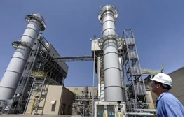
Eden, NC
The 630-MW 2×1 configuration comprises GE F7A GTs, Vogt HRSGs, and a GE ST. HRSGs and BOP are on Ovation DCS; gas and steam turbines are on GE Mark VI.
Control System: Ovation 3.4
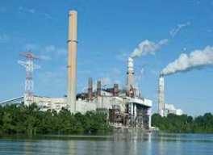
Chesterfield, Virginia
Designed, configured, and commissioned the complete ABB control system for two FGD units at a power station with five pulverized coal boilers totaling 1,400 MW capacity.
Control System: ABB Infi90/800xA
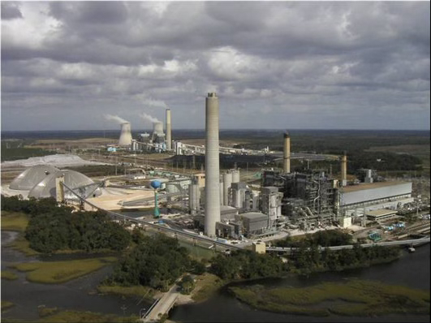
Jacksonville, Florida
Delivered ABB control solutions for the Burner Management System (BMS), Combustion Control System (CCS), Balance of Plant (BOP), and Alarm Management with Operator Graphics.
Control System: ABB Infi90
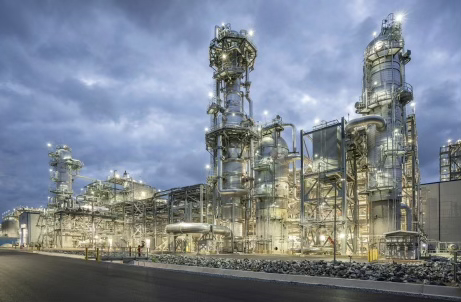
Cove Point, MD
DCS Migration from ABB Infi90 to DeltaV of an auxiliary liquefaction plant, including logic conversion, HMI design and commissioning.
Control System: DeltaV
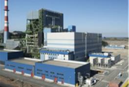
Coronel, Chile
Implemented combustion controls, drum level controls, boiler and unit master logics with turbine-coordinated control mode, developing HMI graphics and logic diagrams to optimize system performance.
Control System: Foxboro I/A
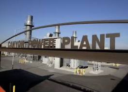
Anaheim, CA
Virtualized the control system HMI for a peaking plant with four 50 MW simple cycle gas turbines and balance-of-plant systems, enhancing operational reliability.
Control System: ABB 800xA
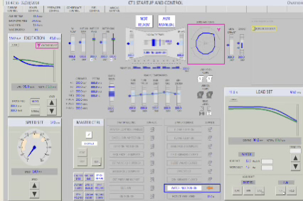
Chesapeake, Virginia
Gas Turbine Simulator for a Combustion Turbine that includes BOP and Electrical distribution network components.
Control System: Ovation 3.7
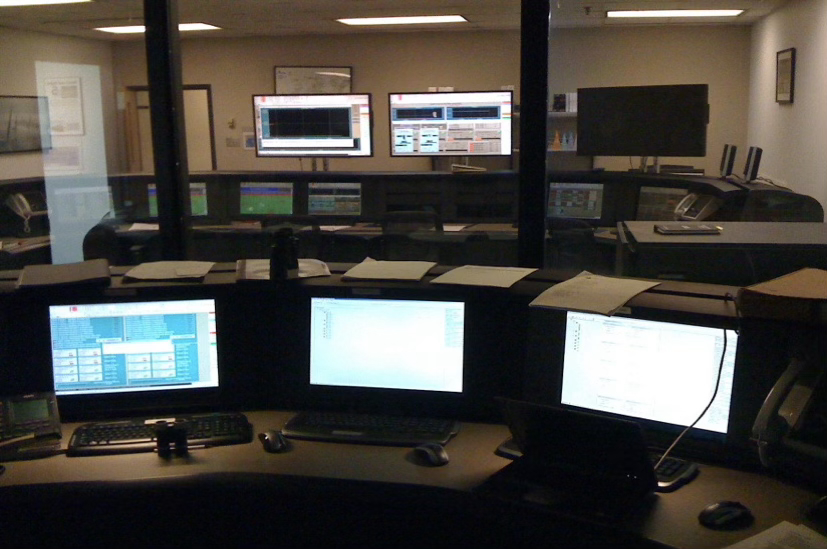
Chesapeake, Virginia
Pulverize coal training simulator of a 300MW unit, which consists of 6 pulverizers, steam turbine and electrical generator.
Control System: ABB Infi90/800xA
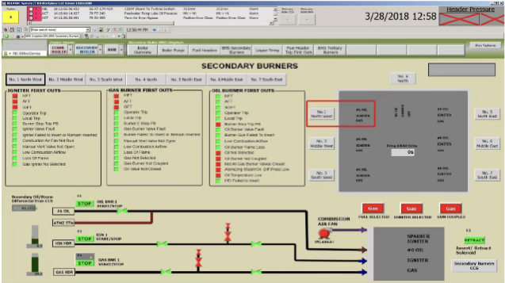
Edmonton, Alberta
Pulverized Coal Training simulator of a 400 MW unit, which consist of simulated benchboards
Control System: Siemens T3000
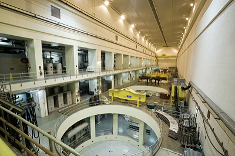
Bath County, Virginia
Pumped Storage Station simulator for checkout and training.
Control System: Ovation 3.7
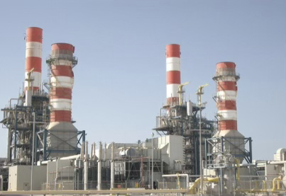
Abu Dhabi, UAE
A combined-cycle and desalination plant (CCDP) with an electrical output of 1,672.5 MW and a water output of 84.8 million gallons per day (MGD). The facility comprises of a 10 x 3 combined cycle plant, 4 multi-stage flash (MSF) units, and 14 multi-effect distillation (MED) units.
Control System: Siemens T3000
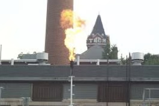
Atlanta, Georgia
Simulator for chiller Plant Energy management System operation and optimization.
Control System: ABB S+ System